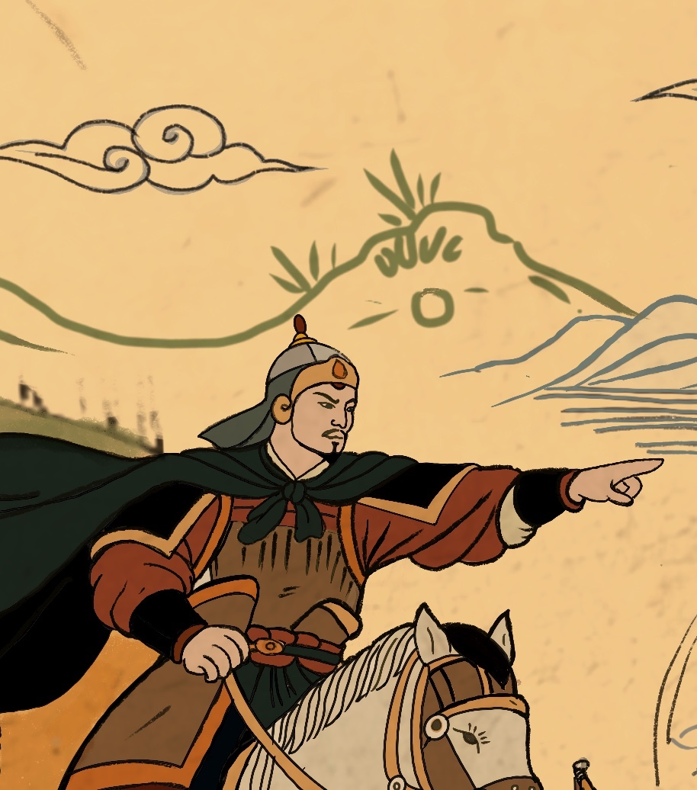
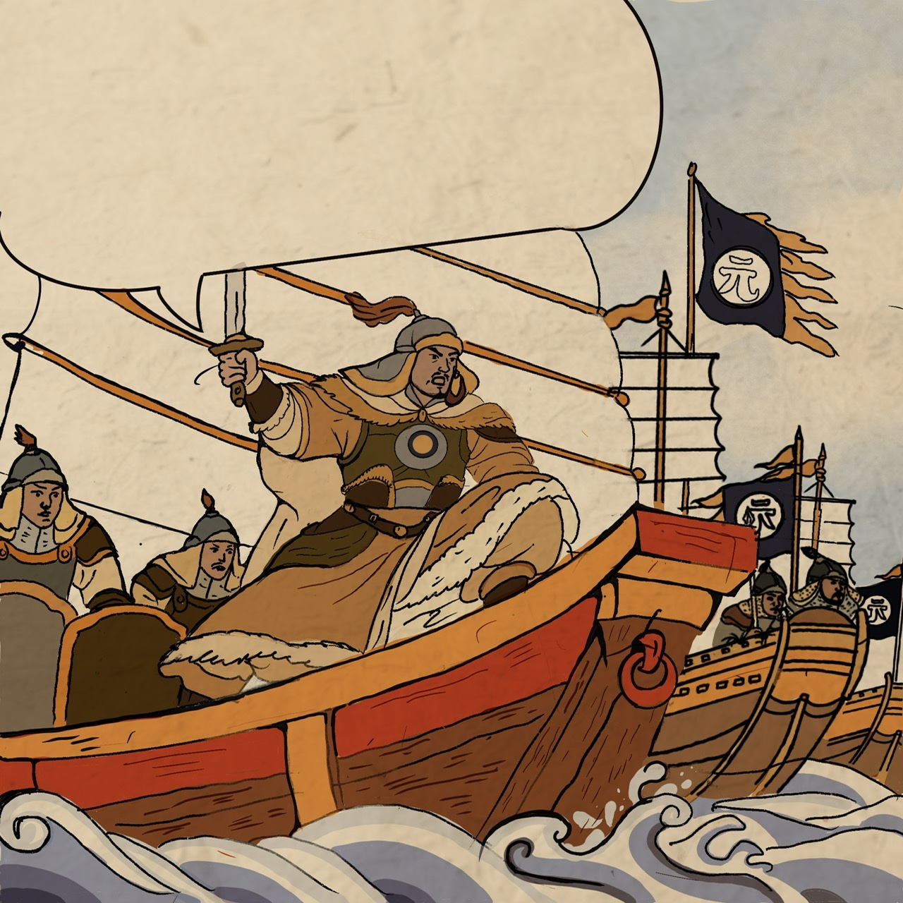

Thư viện chương · Hào khí Đông A
BA HỒI
GIỮ NƯỚC
Từ bóng giặc nơi biên ải đến khúc khải hoàn trên sông Bạch Đằng.
03chương truyện
 Chương 1
Chương 1
01
Mở đầu cuộc chiến · 20 trang
Hội nghị Diên Hồng
Giặc tràn biên ải, thành quách báo động. Triều đình và quân dân Đại Việt bước vào giờ phút quyết định vận mệnh non sông.
Biên ảiKỵ binhĐại Việt 1285
Đọc chương 1 →
 Chương 2
Chương 2
02
Phản công · 15 trang
Thăng Long thất thủ
Giữ quân, chờ thời và tung đòn phản kích. Khí phách tướng sĩ nhà Trần bừng dậy giữa thế trận sông nước hiểm nguy.
Phản côngThủy chiếnHào khí Đông A
Đọc chương 2 →

Chương 3



03
Khải hoàn · 8 trang
Chiến thắng
Bạch Đằng
Trận địa cọc, con nước và nghệ thuật quân sự Đại Việt hợp thành đòn quyết chiến, khép lại mộng xâm lăng.
Bạch ĐằngTrận địa cọcKhải hoàn
Đọc chương 3 →